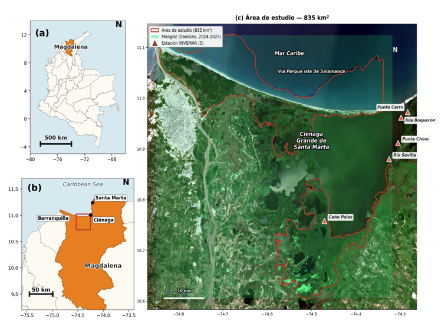
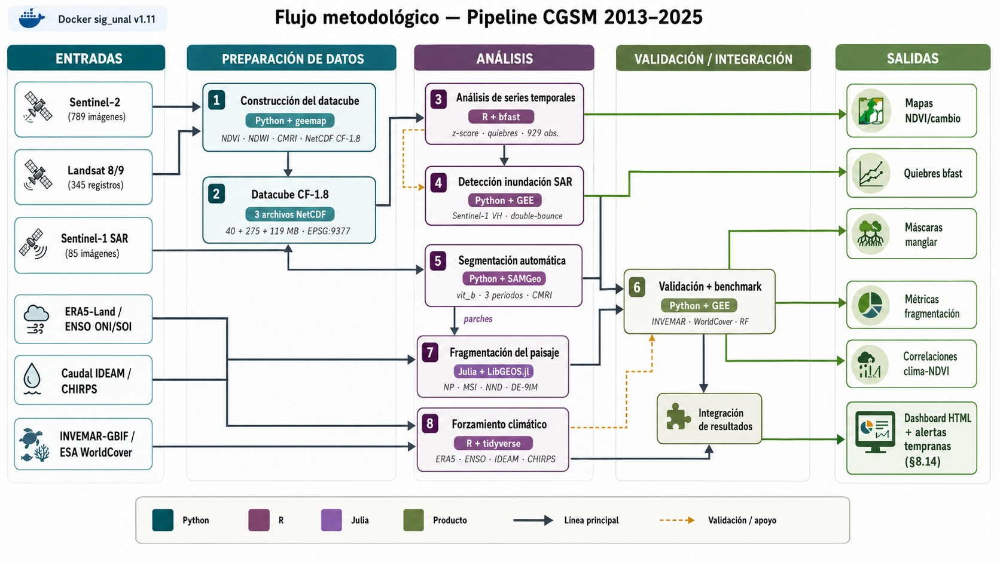
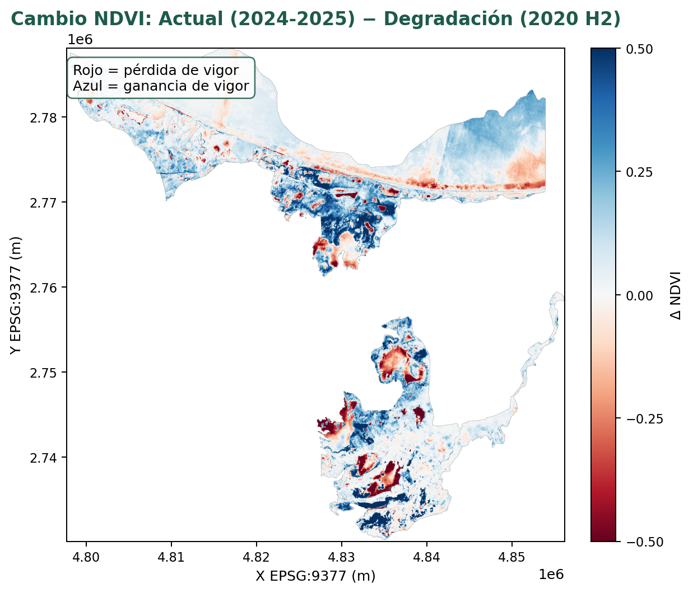
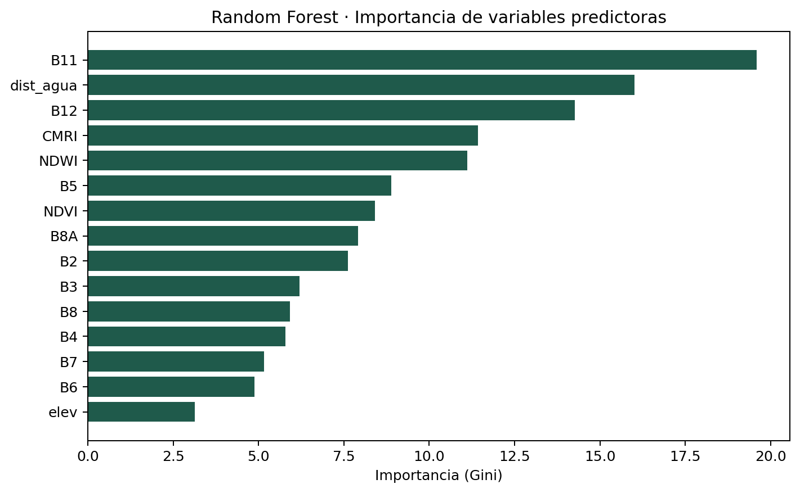
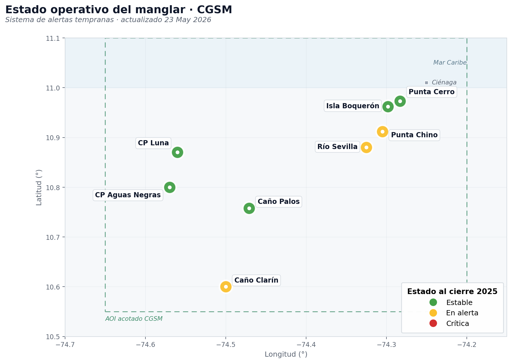
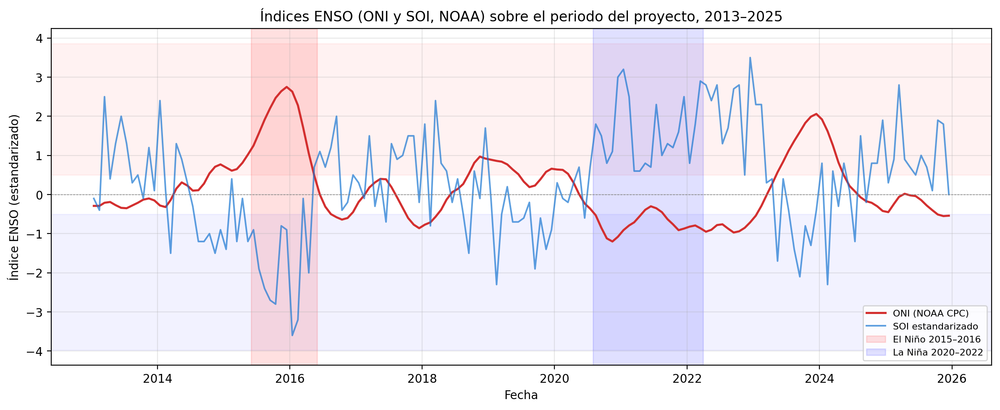

<!doctype html>
<html lang="es">
<head>
<meta charset="utf-8"/>
<meta name="viewport" content="width=device-width, initial-scale=1"/>
<title>Palacio de la Memoria · Pipeline multilenguaje CGSM</title>
<style>
  :root{
    --bg:#0a1417; --bg2:#0e1c20; --panel:#122428; --panel2:#152d31;
    --line:#214049; --ink:#e9f4f1; --soft:#a3c4bf; --mut:#6f928d;
    --teal:#14b8a6; --teal2:#0f766e; --green:#16a34a; --amber:#f59e0b; --red:#ef4444;
    --py:#4d9de0; --r:#a06cd5; --jl:#3fb950; --gold:#fbbf24;
    --c-rs:#34d399; --c-idx:#a3e635; --c-fus:#fbbf24; --c-sam:#c084fc;
    --c-dt:#60a5fa; --c-bfa:#2dd4bf; --c-val:#fb7185; --c-cli:#38bdf8; --c-ref:#94a3b8;
    --radius:15px;
  }
  *{box-sizing:border-box}
  html,body{margin:0;padding:0}
  body{background:radial-gradient(1100px 640px at 82% -8%,#10353a 0%,var(--bg) 56%);
    color:var(--ink);font-family:"Segoe UI",system-ui,-apple-system,sans-serif;line-height:1.5;min-height:100vh}
  ::selection{background:var(--amber);color:#1a1207}
  a{color:var(--teal)}
  h1,h2,h3,h4{font-family:Georgia,"Times New Roman",serif;font-weight:700;line-height:1.15;margin:0}
  .app{display:grid;grid-template-columns:280px 1fr;min-height:100vh}
  .side{position:sticky;top:0;height:100vh;overflow-y:auto;background:linear-gradient(180deg,#0d1f23,#0a1418);
    border-right:1px solid var(--line);padding:18px 13px;display:flex;flex-direction:column;gap:4px}
  .brand{padding:6px 10px 12px}
  .brand .k{font-size:10.5px;letter-spacing:.2em;text-transform:uppercase;color:var(--amber);font-weight:700}
  .brand h1{font-size:16.5px;margin-top:6px;color:#fff}
  .brand p{font-size:11.5px;color:var(--mut);margin:6px 0 0}
  .navsec{font-size:10px;letter-spacing:.16em;text-transform:uppercase;color:var(--mut);margin:12px 10px 4px;font-weight:700}
  .navbtn{display:flex;align-items:center;gap:10px;padding:8px 11px;border-radius:11px;cursor:pointer;
    color:var(--soft);font-size:13.5px;border:1px solid transparent;transition:.15s;user-select:none}
  .navbtn .num{width:21px;height:21px;border-radius:7px;background:#0e2128;border:1px solid var(--line);
    display:grid;place-items:center;font-size:10.5px;color:var(--mut);flex:none}
  .navbtn:hover{background:#10242a;color:var(--ink)}
  .navbtn.active{background:linear-gradient(90deg,#103b38,#0e2e2c);color:#fff;border-color:#1d5a52}
  .navbtn.active .num{background:var(--teal2);border-color:var(--teal);color:#fff}
  .side .foot{margin-top:auto;padding:11px 10px;font-size:10.5px;color:var(--mut);border-top:1px solid var(--line)}
  main{padding:32px 38px 80px;max-width:1180px}
  .room{display:none;animation:fade .35s ease}
  .room.on{display:block}
  @keyframes fade{from{opacity:0;transform:translateY(9px)}to{opacity:1;transform:none}}
  .eyebrow{font-size:12px;letter-spacing:.2em;text-transform:uppercase;color:var(--amber);font-weight:700}
  .room>h2{font-size:32px;margin:8px 0 4px;color:#fff}
  .lede{color:var(--soft);font-size:15.5px;max-width:74ch;margin:10px 0 24px}
  .grid{display:grid;gap:15px}
  .g2{grid-template-columns:repeat(2,1fr)} .g3{grid-template-columns:repeat(3,1fr)} .g4{grid-template-columns:repeat(4,1fr)}
  @media(max-width:1000px){.g2,.g3,.g4{grid-template-columns:1fr}}
  .card{background:linear-gradient(180deg,var(--panel),var(--bg2));border:1px solid var(--line);
    border-radius:var(--radius);padding:17px 18px}
  .card h3{font-size:16.5px;color:#fff;margin-bottom:7px}
  .card p{margin:6px 0;color:var(--soft);font-size:13.5px}
  .lab{font-size:11px;color:var(--mut);text-transform:uppercase;letter-spacing:.08em;font-weight:700}
  .tag{display:inline-flex;align-items:center;gap:5px;font-size:10.5px;font-weight:700;letter-spacing:.03em;
    text-transform:uppercase;padding:3px 9px;border-radius:999px;background:#0e2026;border:1px solid var(--line);color:var(--soft);margin:2px 3px 2px 0}
  .chip{display:inline-block;font-size:11.5px;padding:3px 9px;border-radius:999px;background:#0e2026;border:1px solid var(--line);color:var(--soft);margin:3px 4px 3px 0}
  .stat{background:var(--panel2);border:1px solid var(--line);border-radius:13px;padding:13px}
  .stat .n{font-family:Georgia,serif;font-size:27px;color:var(--teal);font-weight:700;line-height:1}
  .stat .l{font-size:12px;color:var(--soft);margin-top:6px}
  details.why{margin-top:11px;border:1px dashed #2b5a52;border-radius:11px;background:#0c211d;overflow:hidden}
  details.why>summary{cursor:pointer;padding:9px 13px;color:var(--amber);font-weight:700;font-size:13px;list-style:none}
  details.why>summary::before{content:"▸ ";color:var(--amber)}
  details.why[open]>summary::before{content:"▾ "}
  details.why .body{padding:0 14px 12px;color:var(--soft);font-size:13px}
  .vs{display:inline-block;background:#241015;border:1px solid #5a2230;color:#fda4af;border-radius:8px;padding:1px 8px;font-size:11.5px;font-weight:700}
  .ok2{display:inline-block;background:#0d211d;border:1px solid #1d5a48;color:#5ee0c2;border-radius:8px;padding:1px 8px;font-size:11.5px;font-weight:700}
  .formula{font-family:"Cambria Math",Georgia,serif;font-size:16.5px;background:#0b1c20;border:1px solid var(--line);
    border-radius:10px;padding:9px 13px;color:#cffaf3;display:inline-block;margin:6px 0}
  .step{display:flex;gap:13px;align-items:flex-start;padding:13px 0;border-top:1px solid var(--line)}
  .step:first-child{border-top:none}
  .step .b{width:32px;height:32px;border-radius:9px;background:var(--teal2);color:#fff;display:grid;place-items:center;
    font-family:Georgia,serif;font-weight:700;flex:none}
  img.fig{width:100%;border-radius:11px;border:1px solid var(--line);background:#fff;display:block}
  .imgcap{font-size:11.5px;color:var(--mut);margin-top:7px}
  .thread{display:flex;flex-wrap:wrap;gap:0;align-items:stretch;margin:8px 0 4px}
  .tnode{flex:1;min-width:135px;background:var(--panel);border:1px solid var(--line);border-radius:11px;padding:11px;margin:5px;cursor:pointer;transition:.15s}
  .tnode:hover{border-color:var(--teal);transform:translateY(-2px)}
  .tnode .k{font-size:10.5px;letter-spacing:.12em;text-transform:uppercase;color:var(--amber);font-weight:700}
  .tnode .d{font-size:12px;color:var(--soft);margin-top:5px}
  .toolbar{display:flex;flex-wrap:wrap;gap:9px;align-items:center;margin:6px 0 16px}
  .search{flex:1;min-width:210px;background:var(--panel);border:1px solid var(--line);border-radius:11px;padding:10px 13px;color:var(--ink);font-size:13.5px}
  .search::placeholder{color:var(--mut)}
  .filterbtn{font-size:11.5px;padding:6px 11px;border-radius:999px;border:1px solid var(--line);background:#0e2026;color:var(--soft);cursor:pointer;font-weight:600}
  .filterbtn.on{color:#06231a;font-weight:800}
  .count{font-size:12px;color:var(--mut)}
  .art{background:linear-gradient(180deg,var(--panel),var(--bg2));border:1px solid var(--line);border-left-width:4px;border-radius:12px;padding:14px 15px;cursor:pointer;transition:.15s}
  .art:hover{border-color:#2d6a5d;transform:translateY(-2px)}
  .art .ref{font-size:12.5px;color:var(--amber);font-weight:700}
  .art .ti{font-size:13.5px;color:#fff;margin:5px 0;font-weight:600;line-height:1.25}
  .art .meta{font-size:12.5px;color:var(--soft);display:none} .art.open .meta{display:block}
  .cluster{border:1px solid var(--line);border-left-width:5px;border-radius:12px;padding:14px 16px;background:var(--panel);margin-bottom:13px}
  .cluster h3{font-size:15.5px}
  .codecard{border:1px solid var(--line);border-radius:12px;background:var(--panel);overflow:hidden;margin-bottom:14px}
  .codecard .h{display:flex;align-items:center;gap:9px;padding:11px 14px;border-bottom:1px solid var(--line)}
  .codecard .h h3{font-size:14.5px}
  .codecard .d{padding:10px 14px;color:var(--soft);font-size:12.5px;border-bottom:1px solid var(--line)}
  pre{margin:0;padding:13px 15px;overflow-x:auto;background:#0a1418;font-family:"JetBrains Mono",Consolas,monospace;font-size:12px;line-height:1.55;color:#d6e6e2}
  .langpill{font-family:"JetBrains Mono",Consolas,monospace;font-size:10px;font-weight:700;padding:2px 8px;border-radius:6px}
  .lp-py{background:#1e3a8a33;color:#7ab8ec} .lp-r{background:#6b21a833;color:#c39bea} .lp-jl{background:#14532d44;color:#74d68a} .lp-sh{background:#3f3f4633;color:#cbd5e1}
  table.tbl{width:100%;border-collapse:collapse;margin:6px 0;font-size:12.5px}
  table.tbl th,table.tbl td{text-align:left;padding:7px 10px;border-bottom:1px solid var(--line)}
  table.tbl th{color:var(--teal);font-weight:700;font-size:11px;text-transform:uppercase;letter-spacing:.04em}
  table.tbl td{color:var(--soft)}
  .note{background:#0d211d;border:1px solid #1d5a48;border-radius:11px;padding:11px 14px;color:var(--soft);font-size:13px}
  .note b{color:var(--teal)}
  hr.sep{border:none;border-top:1px solid var(--line);margin:24px 0}
  .qa{background:linear-gradient(180deg,var(--panel),var(--bg2));border:1px solid var(--line);border-left-width:4px;border-radius:12px;padding:13px 15px;cursor:pointer;transition:.15s}
  .qa:hover{border-color:#2d6a5d}
  .qa .q{font-size:14px;color:#fff;font-weight:600;line-height:1.3;display:flex;gap:8px;align-items:flex-start}
  .qa .q .ix{color:var(--amber);font-family:Georgia,serif;font-weight:700;flex:none}
  .qa .a{display:none;color:var(--soft);font-size:13px;margin-top:9px;line-height:1.55} .qa.open .a{display:block}
  .qa .foot{display:flex;flex-wrap:wrap;gap:6px;align-items:center;margin-top:9px}
  .goroom{font-size:11px;padding:3px 9px;border-radius:999px;background:#0e2026;border:1px solid var(--teal);color:var(--teal);cursor:pointer;font-weight:700}
  .goroom:hover{background:var(--teal);color:#06231a}
  .fc-wrap{max-width:720px;margin:0 auto}
  .fc{background:linear-gradient(180deg,#10302c,#0c241f);border:1px solid #1d5a52;border-radius:18px;min-height:260px;display:grid;place-items:center;text-align:center;padding:32px;cursor:pointer;position:relative}
  .fc .side-k{position:absolute;top:13px;left:17px;font-size:10.5px;letter-spacing:.16em;text-transform:uppercase;color:var(--amber);font-weight:700}
  .fc .q{font-family:Georgia,serif;font-size:22px;color:#fff;line-height:1.3}
  .fc .a{font-size:15px;color:var(--soft);line-height:1.55}
  .fc .hint{position:absolute;bottom:13px;font-size:11.5px;color:var(--mut)}
  .fc-bar{display:flex;gap:9px;align-items:center;justify-content:center;margin-top:15px;flex-wrap:wrap}
  .btn{background:var(--teal2);color:#fff;border:none;border-radius:10px;padding:9px 15px;font-size:13.5px;font-weight:700;cursor:pointer}
  .btn.ghost{background:transparent;border:1px solid var(--line);color:var(--soft)}
  .prog{font-size:12.5px;color:var(--mut)}
  .kbd{font-family:Consolas,monospace;font-size:10.5px;background:#0e2026;border:1px solid var(--line);border-radius:6px;padding:1px 6px;color:var(--soft)}
</style>
</head>
<body>
<div class="app">
  <aside class="side">
    <div class="brand">
      <div class="k">Palacio de la Memoria</div>
      <h1>Pipeline multilenguaje · CGSM</h1>
      <p>Vuélvete experta en tu proyecto, sala por sala. Cada paso, decisión, método y artículo.</p>
    </div>
    <nav id="nav"></nav>
    <div class="foot">Lina Quintero Fonseca · Programación en SIG · UNAL<br/>Atajos: <span class="kbd">← →</span> salas · <span class="kbd">/</span> buscar</div>
  </aside>
  <main id="main"></main>
</div>

<!-- ===================== CODE BLOCKS (verbatim) ===================== -->
<script type="text/plain" data-code="docker">
# Librerías Python adicionales sobre el contenedor sig_unal v1.11
pip install earthengine-api geemap segment-geospatial leafmap
pip install rasterio geopandas xarray shapely folium rasterstats
pip install matplotlib pandas numpy scikit-learn contextily
pip install cdsapi netCDF4                # descarga ERA5-Land desde CDS

earthengine authenticate --auth_mode=notebook   # auth GEE

# Paquetes R adicionales
install.packages(c("bfast","terra","sf","ggplot2","tseries",
                   "stars","dplyr","tidyr","readr","stringr"))

# Paquetes Julia adicionales
using Pkg
Pkg.add(["GeoJSON","DataFrames","CSV","Statistics"])
# SamGeo vit_b requiere >=8 GB RAM; vit_h >=12 GB. RGB se remuestrea 10->30 m.
</script>
<script type="text/plain" data-code="cube_lazy">
import xarray as xr
# Lectura perezosa (dask) del datacube NetCDF CF-1.8: solo materializa lo necesario
ds = xr.open_dataset('data/processed/cubo/cgsm_datacube_trimestral.nc',
                     chunks={'time': 1, 'x': 512, 'y': 512})
# Atributos CF-1.8: Conventions, institution, creator_name, crs_origen, ...
ndvi_serie = ds['reflectance'].sel(band_idx='NDVI').median(dim=['x','y']).compute()
</script>
<script type="text/plain" data-code="zscore">
# Z-scores y detección de anomalías por estación (Landsat 8 + Sentinel-2)
df['z_score'] = df.groupby('estación')['ndvi'].transform(
    lambda x: (x - x.mean()) / x.std())
anomalias = df[df['z_score'] < -2].sort_values('z_score')   # eventos de mortandad
</script>
<script type="text/plain" data-code="s2_indices">
# Colección S2 SR Harmonized + tres índices espectrales en una pasada (GEE)
def add_indices(image):
    ndvi = image.normalizedDifference(['B8', 'B4']).rename('NDVI')
    ndwi = image.normalizedDifference(['B3', 'B8']).rename('NDWI')
    cmri = ndvi.subtract(ndwi).rename('CMRI')          # CMRI = NDVI - NDWI
    return image.addBands([ndvi, ndwi, cmri])

s2 = (ee.ImageCollection('COPERNICUS/S2_SR_HARMONIZED')
        .filterBounds(aoi).filterDate('2018-01-01', '2025-12-31')
        .filter(ee.Filter.lt('CLOUDY_PIXEL_PERCENTAGE', 20))
        .map(mask_s2_clouds).map(add_indices))
</script>
<script type="text/plain" data-code="bfast_r">
library(bfast)
serie  <- read.csv("outputs/tables/serie_temporal_ndvi_combinada.csv")
ts_est <- ts(subset(serie, estación == "Cano_Palos")$ndvi,
             start = c(2013, 1), frequency = 12)
fit    <- bfast(ts_est, h = 0.10, season = "harmonic", max.iter = 2)
plot(fit)   # quiebres 2016 (El Nino), 2020 (La Nina), 2023-24 (El Nino)
</script>
<script type="text/plain" data-code="bfastmonitor">
library(bfast)   # monitor near-real-time -> lógica del semáforo
serie <- read.csv("outputs/tables/serie_temporal_ndvi_combinada.csv")
resultados <- lapply(unique(serie$estación), function(est) {
  ts_est <- ts(subset(serie, estación == est)$ndvi, start = c(2013,1), frequency = 12)
  mon <- bfastmonitor(ts_est, start = c(2020,1),
                      formula = response ~ harmon, order = 3, level = 0.05)
  data.frame(estación = est, breakpoint = as.character(time(mon$breakpoint)),
             magnitud = mon$magnitude)
})
write.csv(do.call(rbind, resultados),
          "outputs/tables/bfastmonitor_estaciones.csv", row.names = FALSE)
</script>
<script type="text/plain" data-code="stars_r">
library(stars); library(sf); library(dplyr)   # contraparte local del flujo GEE
tifs   <- list.files("data/processed/s2", pattern = "NDVI.*\\.tif$", full.names = TRUE)
fechas <- as.Date(stringr::str_match(basename(tifs), "(\\d{4})_Q(\\d)")[, c(2, 3)])
cubo   <- read_stars(tifs, along = list(time = fechas), proxy = TRUE)  # perezoso
serie  <- st_extract(cubo, st_transform(estaciones_sf, st_crs(cubo)))
</script>
<script type="text/plain" data-code="topo_9377">
from src.python.utils import (raster_metadata, vector_to_9377, area_ha_9377,
    parches_borde, parches_con_punto, EPSG_NACIONAL)
meta = raster_metadata('data/processed/samgeo/mask_actual.tif')   # lazy, sin cargar grilla
# Reproyección al sistema oficial colombiano MAGNA-SIRGAS (EPSG:9377)
vector_to_9377('.../manglar_actual.geojson', '.../manglar_actual_9377.geojson')
# Predicados topológicos DE-9IM (delegan en GEOS, igual que PostGIS / JTS)
gdf = area_ha_9377(gpd.read_file('.../manglar_actual_9377.geojson'))
gdf = parches_borde(gdf, aoi)             # intersects con la frontera del AOI
gdf = parches_con_punto(gdf, estaciones)  # contains con los puntos INVEMAR
</script>
<script type="text/plain" data-code="samgeo">
from samgeo import SamGeo
sam = SamGeo(model_type='vit_b', automatic=True)   # vit_b por límite de RAM del contenedor
for periodo in ['degradación', 'recuperación', 'actual']:
    rgb  = f'{res_dir}/CGSM_RGB_{periodo}_30m.tif'
    mask = f'{out_dir}/mask_{periodo}.tif'
    poly = f'{out_dir}/manglar_{periodo}.geojson'
    sam.generate(rgb, output=mask)        # raster binario
    sam.tiff_to_vector(mask, poly)        # parches vectoriales
</script>
<script type="text/plain" data-code="era5">
import cdsapi, xarray as xr
c = cdsapi.Client()
c.retrieve('reanalysis-era5-land-monthly-means', {
    'product_type': 'monthly_averaged_reanalysis',
    'variable': ['total_precipitation', '2m_temperature'],
    'year': [str(y) for y in range(2018, 2026)],
    'month': [f'{m:02d}' for m in range(1, 13)],
    'time': '00:00', 'area': [11.20, -75.05, 10.30, -74.05], 'format': 'netcdf'
}, 'data/raw/era5_land_cgsm_monthly.nc')
ds = xr.open_dataset('data/raw/era5_land_cgsm_monthly.nc', chunks={'time': 12})
anom = ds.groupby('time.month') - ds.groupby('time.month').mean('time')
</script>
<script type="text/plain" data-code="sar">
# Detección de inundación Sentinel-1 SAR (VH, IW) — evento sep 2020
s1_dry   = ee.ImageCollection('COPERNICUS/S1_GRD').filterDate('2020-01-01','2020-03-31').select('VH').median()
s1_flood = ee.ImageCollection('COPERNICUS/S1_GRD').filterDate('2020-09-01','2020-10-31').select('VH').median()
sar_diff = s1_dry.subtract(s1_flood)             # SAR diff = seco - inundación
flood_open   = sar_diff.gt(3).selfMask()         # agua abierta (reflexión especular)
flood_canopy = sar_diff.lt(-2).selfMask()        # bajo dosel (doble rebote agua-tronco)
</script>
<script type="text/plain" data-code="julia_frag">
using GeoJSON, DataFrames, Statistics
function compute_metrics(periodo, base_dir)
    path = joinpath(base_dir, "manglar_$(periodo)_9377.geojson")
    parches = GeoJSON.read(read(path, String))
    áreas = [shoelace_area(p) for p in parches]          # área por fórmula del cordón (m)
    perim = [polygon_perimeter(p) for p in parches]
    msi   = perim ./ sqrt.(pi .* áreas)                  # índice de forma medio
    nnd   = nearest_neighbor_distances(parches)          # distancia al vecino más cercano
    return DataFrame(periodo=periodo, n_parches=length(parches),
        area_total=sum(áreas)/1e4, area_media=mean(áreas)/1e4,
        msi_mean=mean(msi), nnd_mean=mean(nnd)/1e3)
end
</script>

<script>
/* ============================ DATA ============================ */
const ROOMS = [
  ["inicio","El hilo","Cómo conecta todo","A"],
  ["problema","Problema y vacíos","Por qué existe","A"],
  ["pregunta","Pregunta y objetivos","Una meta, cinco pasos","A"],
  ["lugar","Área, tiempo y exploratorio","Por qué aquí y cuándo","A"],
  ["datos","Fuentes de datos","13 conjuntos, 6 categorías","B"],
  ["metodologia","Pipeline multilenguaje","Python · R · Julia","B"],
  ["metodos","Métodos a fondo","Cada método y su porqué","B"],
  ["decisiones","Por qué cada decisión","Lo que te blinda","B"],
  ["resultados","Resultados","Qué encontró el flujo","C"],
  ["codigo","Código","Fragmentos por fase","C"],
  ["figyt","Figuras y tablas","Índice visual","C"],
  ["biblioteca","Biblioteca","26 artículos: aporte + conexión","D"],
  ["relaciones","Cómo se relacionan","Clústeres y vacíos","D"],
  ["glosario","Glosario y ecuaciones","Siglas, términos, fórmulas","D"],
  ["defensa","Banco de preguntas","Posibles preguntas + respuesta","E"],
  ["autoeval","Autoevaluación","Flashcards","E"],
];
const SECS = {A:"Marco", B:"Método", C:"Evidencia", D:"Literatura", E:"Práctica"};

/* ---- Artículos: [ref corta, título, temaKey, aporta, conecta al documento] ---- */
const THEMES = {
  rs:["Manglar & teledetección","--c-rs"], idx:["Índices & geomática","--c-idx"],
  fus:["Fusión óptico-SAR & RF","--c-fus"], sam:["Segmentación / SAM","--c-sam"],
  bfa:["Series & BFAST","--c-bfa"], dt:["Gemelos digitales","--c-dt"],
  val:["Validación & cartografías","--c-val"], cli:["Clima & hidrología","--c-cli"],
  ref:["Datos de referencia","--c-ref"],
};
const ARTICLES = [
  ["Giri et al. (2011)","Status and distribution of mangrove forests of the world (Landsat circa 2000)","rs","Primer inventario global moderno de manglar con Landsat 30 m.","Antecedente base del monitoreo satelital; justifica pasar de inventarios estáticos a series densas."],
  ["Hamilton & Casey (2016)","CGMFC-21: base global continua de cobertura de manglar","rs","Serie anual continua 2000–2012 de cobertura de manglar.","Apoya el uso de series temporales largas; precede la densidad temporal que aporta Sentinel-2."],
  ["Raza et al. (2024)","Time series monitoring of Pakistan's mangrove con Sentinel-2","rs","NDVI S2 en GEE detecta deterioro aun con extensión estable.","Sustenta medir condición (NDVI) y no solo extensión: clave en tu interpretación de contracción vs. consolidación."],
  ["Goldberg et al. (2020)","Global declines in human-driven mangrove loss","rs","62% de la pérdida global 2000–2016 por cambio de uso (sudeste asiático).","Contraste: tu caso (CGSM) es degradación interna por hidrología/clima, no conversión antrópica directa."],
  ["Murillo-Sandoval et al. (2022)","Mangrove cover change trajectories 1984–2020 (Colombia)","rs","36 años con LandTrendr: −48.000 ha, 38.469±2.829 ha por degradación interna.","Antecedente nacional directo; justifica reconstruir trayectorias densas de degradación/recuperación."],
  ["Gupta et al. (2018)","CMRI: índice para discriminar manglar (Landsat 8 OLI)","idx","CMRI = NDVI − NDWI; 73% vs 56% (NDVI) en ambientes estuarinos.","Fundamenta el índice CMRI usado para clasificar parches y construir el datacube."],
  ["Gomarasca (2010)","Basics of geomatics","idx","Marco conceptual de resolución (espacial, temporal, espectral, radiométrica).","Justifica la declaración cuádruple de resolución con que describes las 13 fuentes."],
  ["Selvaraj & Gallego-Pérez (2023)","Mangrove del Pacífico colombiano: óptico+SAR en GEE con RF","fus","Random Forest con Landsat + ALOS-2/PALSAR; F1 0,80–0,90.","Referencia del techo de desempeño RF y de la fusión óptico-SAR que comparas con tu benchmark."],
  ["Vinasco et al. (2020)","Cambios de cobertura en la CGSM 2013–2018 (Landsat 8, RF)","fus","RF sobre clases CORINE; cuantifica cambios en la CGSM.","Antecedente local más cercano; tu vacío: aislar manglar como clase, condición, fragmentación, inundación y forzamientos."],
  ["Yancho et al. (2020)","GEEMMM: Google Earth Engine Mangrove Mapping Methodology","fus","Herramienta abierta de mapeo de manglar en GEE para gestores.","Arquitectura comparable; tú sustituyes la clasificación supervisada principal por umbrales NDVI/CMRI + benchmark RF."],
  ["Verbesselt et al. (2010)","Detecting trend and seasonal changes in satellite image time series","bfa","Algoritmo BFAST: descompone tendencia + estacionalidad + quiebres.","Base del análisis de quiebres estructurales de la serie NDVI (Fase 2)."],
  ["Verbesselt et al. (2012)","Near real-time disturbance detection (bfastmonitor)","bfa","Detección incremental de disturbios con ventana histórica.","Sostiene el módulo de alertas tempranas y la lógica de semáforo."],
  ["Kirillov et al. (2023)","Segment Anything (SAM)","sam","Modelo fundacional de segmentación por prompts.","Base teórica de SamGeo; abre la segmentación automática del manglar."],
  ["Wu & Osco (2023)","samgeo: SAM para datos geoespaciales","sam","Adapta SAM a teledetección (geemap/leafmap).","Herramienta concreta de la Fase 3 (segmentación vit_b por periodo)."],
  ["Lu et al. (2026)","Digital twins of wetlands para monitoreo y gestión","dt","Marco de gemelo digital de humedales (datos+modelos+alertas).","Encuadra el módulo de alertas como componente inicial hacia un Gemelo Digital costero."],
  ["Olofsson et al. (2014)","Good practices for estimating area and assessing accuracy","val","Muestreo probabilístico, matriz de error por área, intervalos.","Guía la validación cartográfica (F1, diseño de muestreo, técnico realista)."],
  ["INVEMAR (2020)","Cartografía de manglares de Colombia 1:25.000","val","Cartografía oficial nacional (clasificación supervisada en GEE).","Referencia nacional de validación (F1 0,583 umbrales / 0,826 RF)."],
  ["Zanaga et al. (2022)","ESA WorldCover 10 m 2021 v200","val","Cobertura global 10 m validada por la ESA (clase 95 manglar).","Segunda referencia de validación (F1 0,548 umbrales / 0,889 RF)."],
  ["Bunting et al. (2022)","Global Mangrove Watch v3.0 (1996–2020)","val","Cambio de extensión global de manglar con SAR banda L.","Referencia global; sustituida por WorldCover al reorganizarse su catálogo en GEE."],
  ["Hersbach et al. (2020)","The ERA5 global reanalysis","cli","Reanálisis climático global (precipitación, temperatura).","Fuente del forzamiento climático local (ERA5-Land) cruzado con NDVI."],
  ["Funk et al. (2015)","CHIRPS: precipitación con estaciones","cli","Producto de precipitación 5,5 km con estaciones.","Validación independiente del forzamiento hídrico sobre cuencas aportantes."],
  ["NOAA CPC (2026)","Índices ENSO ONI y SOI","cli","Índices oceánico-atmosféricos del ENSO.","Contextualiza El Niño 2015–16 y La Niña 2020–22 en la serie."],
  ["IDEAM (2026)","Series de caudal mensual (El Banco, Ganadería Caribe)","cli","Caudal in situ del Magdalena y Aracataca.","Dimensión fluvial del forzamiento (ρ +0,256 Magdalena, 3 meses)."],
  ["Beltrán et al. (2022)","Monitoreo de estructura de manglares CGSM (INVEMAR-GBIF)","ref","Estructura forestal y coordenadas de estaciones permanentes.","Origen de cinco de las ocho estaciones de análisis (DOI público)."],
  ["INVEMAR (2024)","Monitoreo de la rehabilitación de la CGSM","ref","Documenta la rehabilitación hidráulica y la regeneración.","Apoya la interpretación de recuperación post-2020 y el contexto hidrológico."],
  ["Comisión Conjunta Ramsar (2026)","Plan de Manejo Ambiental del sitio Ramsar CGSM","ref","Plan decenal de seguimiento ambiental del humedal.","Vincula el valor práctico del monitoreo con la gestión del sitio Ramsar."],
];
const CLUSTERS = [
  ["rs","Trayectorias de manglar por teledetección","Giri 2011 · Hamilton 2016 · Raza 2024 · Goldberg 2020 · Murillo 2022","Justifican medir condición y trayectorias densas, no solo extensión. Vacío: en la CGSM faltaba aislar manglar como clase con condición + fragmentación."],
  ["fus","Fusión óptico-SAR y Random Forest","Selvaraj 2023 · Vinasco 2020 · Yancho 2020","Demuestran RF y fusión en GEE. Vacío: un flujo reproducible que integre además segmentación, inundación y forzamientos en una sola arquitectura."],
  ["bfa","Series temporales y disturbio","Verbesselt 2010 · 2012","Aportan BFAST y bfastmonitor. Conectan Fase 2 (quiebres) con el módulo de alertas (semáforo)."],
  ["sam","Segmentación con modelos fundacionales","Kirillov 2023 · Wu & Osco 2023","Abren la segmentación automática (SamGeo). Vacío: SAM no se había evaluado para manglar e inundación en la CGSM."],
  ["val","Validación y cartografías de referencia","Olofsson 2014 · INVEMAR 2020 · Zanaga 2022 · Bunting 2022","Fijan el techo metodológico (F1 ≈ 0,833 entre referencias) y las buenas prácticas de exactitud."],
  ["cli","Forzamiento climático-hidrológico","Hersbach 2020 · Funk 2015 · NOAA 2026 · IDEAM 2026","Permiten cruzar ENSO, caudal y precipitación con la respuesta del manglar, desagregando por naturaleza espectral."],
  ["dt","Gemelo digital y gestión","Lu 2026 · INVEMAR 2024 · Ramsar 2026","Encuadran el aporte operativo: del flujo reproducible al monitor y a la gestión del sitio Ramsar."],
];

/* ---- Decisiones: [decisión, por qué, alternativa rechazada] ---- */
const DECISIONS = [
  ["AOI acotado de 835,3 km² (no el preliminar de 5.073 km²)","La unión SFF CGSM + VPI Salamanca (RUNAP) concentra el manglar protegido y mejora la comparabilidad con las cartografías oficiales.","El AOI preliminar inflaba el manglar potencial con vegetación riberana, salitrales y zonas agropecuarias; bajaba la precisión."],
  ["Periodo 2013–2025","Inicia con Landsat 8 (2013) y se extiende con Sentinel-2 (2018+) para cubrir El Niño 2015–16, La Niña 2020–22 y El Niño 2023–24.","Usar solo Sentinel-2 (2018–2025) NO detectó quiebres BFAST: la serie corta era insuficiente."],
  ["Combinar Landsat 8 + Sentinel-2","Extiende la serie a 12 años (929 obs.) y revela quiebres invisibles a Sentinel-2 sola (p. ej. 2016).","Una sola misión sacrifica longitud temporal (S2) o densidad/resolución (Landsat)."],
  ["EPSG:9377 (MAGNA-SIRGAS Origen Nacional)","Sistema oficial del IGAC (Res. 471/2020): áreas métricas correctas comparables con la cartografía base nacional.","Calcular áreas en grados o en una proyección esférica aproximada introduce error sistemático."],
  ["Random Forest como benchmark de la regla por umbrales","RF es interpretable, robusto con pocas muestras y nativo de GEE; mide cuánto mejora un supervisado sobre el umbral.","No se elige SAM como clasificador final: SAM segmenta cualquier objeto y requiere filtrado posterior; se evalúa, no se asume superior."],
  ["SamGeo backbone vit_b (no vit_h)","vit_b cabe en los 8 GB de RAM del contenedor sig_unal v1.11; vit_h exige >=12 GB.","vit_h da mayor detalle pero excede la memoria disponible; además las RGB se remuestrean a 30 m."],
  ["Umbral NDVI > 0,70 para la regla determinística","Conservador: prioriza precisión (pocos falsos positivos) frente a manglar denso.","Reduce sensibilidad (deja fuera manglar joven/degradado); por eso se complementa con RF y se propone evaluar 0,60–0,65."],
  ["Tres periodos de referencia (degradación 2020 H2, recuperación 2022 H1, actual 2024–25)","Cada ventana es una fase fenológica estable; el periodo actual es un único año hidrológico para no contaminarlo con La Niña 2023–24.","Promediar toda la serie mezcla estados; tomar tendencias anualizadas sin ciclos suficientes induce error."],
  ["Desagregar estaciones por naturaleza espectral (manglar vs. limnológica)","Manglar y cuerpos de agua responden a los forzamientos con signos opuestos; promediar las 8 cancela la señal (|ρ|<0,12).","Promediar todas las estaciones produce correlaciones engañosamente bajas y oculta el efecto real sobre el dosel."],
  ["BFAST en R y fragmentación en Julia (no todo en Python)","Cada lenguaje en su fortaleza: R para series/quiebres, Julia para geometría/topología; validación cruzada hasta 3 decimales.","Forzar todo en un lenguaje sacrifica madurez de librerías (bfast en R, LibGEOS.jl en Julia) y la prueba de interoperabilidad."],
  ["NetCDF CF-1.8 como formato del datacube","Interoperable entre Python, R y Julia con lectura perezosa; evita reconsultar la API de GEE.","GeoTIFF sueltos no llevan metadatos temporales/CF ni permiten el acceso por chunks de forma estándar."],
  ["SAR diff = seco − inundación (convención explícita)","Hace inequívoca la interpretación: > +3 dB agua abierta (reflexión especular); < −2 dB bajo dosel (doble rebote).","Sin fijar la convención del signo, el doble rebote (que sube el backscatter) se interpretaría al revés."],
];

/* ---- Métodos a fondo: [nombre, qué, por qué (decisión), libs] ---- */
const METHODS = [
  ["Datacube multitemporal","Composiciones S2 (nubes <20%, QA60) y Landsat 8/9; índices NDVI·NDWI·CMRI; NetCDF CF-1.8 a 30 m, EPSG:9377.","Mitiga nubosidad tropical y produce un flujo temporalmente consistente y reproducible, leído por los tres lenguajes sin reconsultar GEE.","geemap · xarray · rioxarray"],
  ["Series temporales + BFAST","929 obs. mensuales de NDVI; z-score (z<−2) para anomalías; BFAST (h=0,15 y 0,10) para quiebres estructurales.","BFAST separa tendencia, estacionalidad y quiebres; h=0,10 (≈12 meses) detecta más quiebres que h=0,15 (≈18 meses).","bfast (R) · pandas"],
  ["Segmentación SamGeo","vit_b sobre RGB de 3 periodos; vectorización a GeoJSON; clasificación de parches por CMRI medio; filtro 1–5.000 ha.","Segmentación guiada por prompts sin entrenar por clase; se valida frente a SAM como pregunta abierta del campo.","samgeo (vit_b)"],
  ["Fragmentación del paisaje","Julia: nº de parches, densidad, área media, MSI (forma) y NND (aislamiento); predicados DE-9IM (intersects, contains).","Julia es fuerte en cómputo geométrico; DE-9IM (vía GEOS) da relaciones topológicas formales reproducibles con Python.","GeoJSON.jl · LibGEOS.jl"],
  ["Inundación SAR","Sentinel-1 VH (IW): SAR diff = seco − inundación; agua abierta >+3 dB, bajo dosel <−2 dB (doble rebote).","C-band penetra poco el dosel denso; el doble rebote agua-tronco es la firma del bosque inundado.","Sentinel-1 GRD (GEE)"],
  ["Forzamiento climático-hidrológico","ERA5-Land, ENSO ONI/SOI, caudal IDEAM y CHIRPS cruzados con NDVI z-score; rezagos 0–3 meses; por naturaleza espectral.","Cuatro fuentes independientes que convergen; desagregar evita cancelar señales opuestas manglar/agua.","cdsapi · xarray · R"],
  ["Validación + Random Forest","Umbrales (NDVI>0,70, SRTM<10 m, dist. agua JRC<3 km) vs. RF (100 árboles, 15 variables, 1.000 puntos, CV k=5).","Doble referencia (INVEMAR, WorldCover) y techo metodológico realista (F1≈0,833); RF mide la mejora del supervisado.","smileRandomForest (GEE)"],
  ["Reproducibilidad","Monorepo público, NetCDF CF-1.8, contenedor Docker sig_unal v1.11, 47 CSV + 35 PNG, validación trilingüe.","Congela versiones y hace el flujo independiente del sistema operativo; ciencia abierta verificable.","Docker · Git/GitHub"],
];
const ECUACIONES = [
  ["NDVI · vigor","NDVI = (NIR − Red)/(NIR + Red)",[["NIR","B8: infrarrojo cercano, alto en dosel sano"],["Red","B4: rojo, absorbido por clorofila"]],"Vigor fotosintético. Filtro NDVI > 0,4 aísla manglar; NDVI > 0,70 en la regla por umbrales."],
  ["NDWI · agua","NDWI = (Green − NIR)/(Green + NIR)",[["Green","B3: verde"],["NIR","B8: absorbido por el agua"]],"Realza agua abierta; resta el componente de agua al construir CMRI."],
  ["CMRI · manglar","CMRI = NDVI − NDWI",[["NDVI","componente de vigor"],["NDWI","componente de agua que se resta"]],"Discrimina manglar en suelo saturado (Gupta 2018: 73% vs 56%). Clasifica los parches segmentados."],
  ["z-score · anomalía","z = (x − μ)/σ",[["x","NDVI observado del mes"],["μ","media de la serie en la estación"],["σ","desviación estándar"]],"z < −2 marca anomalía/disturbio; alimenta la tabla de mortandad y el semáforo."],
  ["MSI · forma","MSI = perímetro / (2·√(π·área))",[["perímetro","del parche (m, EPSG:9377)"],["área","del parche (m²)"]],"Índice de forma medio: bordes más irregulares por regeneración no uniforme (0,51 → 1,46)."],
  ["SAR diff · inundación","SAR diff = VH(seco) − VH(inundación)",[["VH seco","backscatter ene–mar 2020"],["VH inund.","backscatter sep–oct 2020"]],"> +3 dB agua abierta (reflexión especular); < −2 dB bajo dosel (doble rebote agua-tronco)."],
];
const GLOSCAT = {
  sensores:["Sensores y datos","--c-cli"], indices:["Índices espectrales","--c-idx"],
  prog:["Programación y reproducibilidad","--jl"], metodos:["Métodos y modelos","--c-sam"],
  metricas:["Métricas y validación","--c-val"], lugar:["Lugar e instituciones","--c-rs"],
};
const GLOSARIO = [
  ["NDVI","Normalized Difference Vegetation Index. Vigor de la vegetación (B8−B4)/(B8+B4).","indices"],
  ["NDWI","Normalized Difference Water Index. Realza agua abierta (B3−B8)/(B3+B8).","indices"],
  ["CMRI","Combined Mangrove Recognition Index = NDVI − NDWI (Gupta 2018).","indices"],
  ["z-score","(x−μ)/σ. Anomalía estandarizada; z<−2 marca disturbio.","indices"],
  ["Datacube","Estructura multitemporal y multisensor armonizada (aquí, NetCDF CF-1.8, 31 láminas trimestrales).","prog"],
  ["NetCDF CF-1.8","Formato de datos auto-descriptivo con convenciones climáticas; lectura perezosa con xarray/stars.","prog"],
  ["Lectura perezosa (lazy)","Planifica el cómputo (dask/proxy) y solo materializa los píxeles necesarios con .compute().","prog"],
  ["EPSG:9377","MAGNA-SIRGAS Origen Nacional, sistema oficial colombiano (IGAC, Res. 471/2020) para áreas métricas.","prog"],
  ["DE-9IM","Dimensionally Extended 9-Intersection Model: relaciones topológicas formales (intersects, contains) vía GEOS.","prog"],
  ["Docker sig_unal v1.11","Contenedor del curso que congela versiones de Python, R y Julia (reproducibilidad).","prog"],
  ["Validación trilingüe","Python, R y Julia producen valores equivalentes hasta tres decimales (no dependen del entorno).","prog"],
  ["Multilenguaje","Orquestar Python (GEE/SamGeo/RF/dashboard), R (BFAST/series) y Julia (geometría/topología).","prog"],
  ["BFAST","Breaks For Additive Season and Trend: descompone serie y detecta quiebres estructurales (R).","metodos"],
  ["bfastmonitor","Variante incremental near-real-time de BFAST; base del semáforo de alertas.","metodos"],
  ["SamGeo / SAM","Segment Anything Model adaptado a geoespacial; segmenta por prompts sin entrenar por clase.","metodos"],
  ["Random Forest","Clasificador de ensamble (100 árboles); benchmark supervisado frente a la regla por umbrales.","metodos"],
  ["MSI","Índice de forma medio: perímetro/(2√(π·área)); irregularidad del borde del parche.","metricas"],
  ["NND","Distancia media al vecino más cercano; aislamiento/conectividad de los parches.","metricas"],
  ["Backscatter / doble rebote","Energía SAR devuelta; el doble rebote agua-tronco sube el VH bajo dosel inundado.","sensores"],
  ["F1-score","Media armónica de precisión y sensibilidad; métrica principal de clasificación.","metricas"],
  ["Techo metodológico","Acuerdo entre referencias (INVEMAR ↔ WorldCover, F1 0,833): no se espera acuerdo perfecto.","metricas"],
  ["Sentinel-2 / Landsat 8-9","Misiones ópticas (10 m / 30 m) que sostienen la serie NDVI 2013–2025.","sensores"],
  ["Sentinel-1 SAR","Radar banda C (VH, IW); detecta inundación abierta y bajo dosel.","sensores"],
  ["ERA5-Land · CHIRPS · ENSO · IDEAM","Forzamiento: reanálisis climático, precipitación, índices ENSO y caudal in situ.","sensores"],
  ["CGSM","Ciénaga Grande de Santa Marta: mayor complejo lagunar costero de Colombia (Caribe).","lugar"],
  ["AOI acotado","835,3 km² = SFF CGSM + Vía Parque Isla de Salamanca (RUNAP); reemplaza el preliminar de 5.073 km².","lugar"],
  ["INVEMAR-GBIF","Instituto marino-costero; aporta estaciones y la cartografía oficial 1:25.000.","lugar"],
  ["Complejo de Pajarales","Núcleo de manglar denso; estaciones Caño Palos, Caño Clarín, CP Aguas Negras, CP Luna.","lugar"],
  ["SAR","Radar de Apertura Sintética: sensor activo de microondas; ve a través de nubes y de noche y mide la retrodispersión (backscatter).","sensores"],
  ["VH · IW","Polarización del radar (emite V, recibe H) y modo Interferometric Wide de Sentinel-1; usados para la detección de inundación.","sensores"],
  ["RGB · S2 SR Harmonized","Composición roja-verde-azul; SR Harmonized = reflectancia de superficie armonizada de Sentinel-2 (base de SamGeo).","sensores"],
  ["QA60","Banda de calidad de Sentinel-2 que se usa para enmascarar nubes y cirros antes de componer.","sensores"],
  ["ENSO · ONI · SOI","El Niño-Oscilación del Sur; ONI (índice oceánico) y SOI (índice atmosférico) miden sus fases. El SOI explicó más que el ONI.","sensores"],
  ["SRTM (DEM)","Modelo digital de elevación (Shuttle Radar Topography Mission); restringe el análisis a menos de 10 m s.n.m.","sensores"],
  ["JRC Global Surface Water","Producto del Joint Research Centre con la dinámica del agua 1984–2021; ~51% del AOI es lámina de agua.","sensores"],
  ["GFD","Global Flood Database: inventario de eventos de inundación históricos 2001–2017.","sensores"],
  ["GEE","Google Earth Engine: plataforma en la nube para procesar imágenes satelitales sin descargarlas ni montar infraestructura local.","prog"],
  ["MAGNA-SIRGAS","Marco geodésico oficial de Colombia; EPSG:9377 es su Origen Nacional, usado para áreas métricas correctas.","prog"],
  ["dask / chunks","Motor de cómputo perezoso por bloques que permite operar el datacube sin cargarlo entero en memoria.","prog"],
  ["GEOS / LibGEOS.jl","Motor geométrico que implementa los predicados DE-9IM (el mismo que usan PostGIS y JTS); en Julia vía LibGEOS.jl.","prog"],
  ["shoelace (fórmula del cordón)","Calcula el área de un polígono a partir de sus coordenadas en metros (usada en Julia para la fragmentación).","prog"],
  ["vit_b / vit_h","Backbones (tamaños) de SAM/SamGeo. vit_b cabe en 8 GB de RAM del contenedor; vit_h exige más de 12 GB.","metodos"],
  ["Descomposición armónica (harmon)","Modelo estacional que BFAST y bfastmonitor ajustan para separar estacionalidad de tendencia y quiebres.","metodos"],
  ["Gemelo Digital","Representación digital dinámica de un sistema; aquí, el horizonte operativo del módulo de alertas, no un simulador completo.","metodos"],
  ["LandTrendr","Algoritmo de detección de tendencias y quiebres en series Landsat (Murillo 2022); antecedente del análisis temporal.","metodos"],
  ["Precisión / Sensibilidad / Especificidad","Precisión = valor predictivo positivo; sensibilidad (recall) = detecta la clase real; especificidad = identifica la no-clase.","metricas"],
  ["GMW · ESA WorldCover","Global Mangrove Watch (extensión global de manglar, SAR banda L) y ESA WorldCover (cobertura global 10 m); referencias de validación.","metricas"],
  ["INVEMAR 1:25.000","Cartografía oficial colombiana de manglares (INVEMAR 2020); referencia nacional de validación.","metricas"],
  ["AOI","Area of Interest (área de interés). Aquí, el AOI acotado de 835,3 km².","lugar"],
  ["RUNAP","Registro Único Nacional de Áreas Protegidas; de él se toman los polígonos del SFF y la Vía Parque.","lugar"],
  ["SFF · VPI","Santuario de Fauna y Flora CGSM y Vía Parque Isla de Salamanca; su unión define el AOI acotado.","lugar"],
  ["IGAC","Instituto Geográfico Agustín Codazzi: autoridad cartográfica (Resolución 471/2020 fija EPSG:9377).","lugar"],
];

/* ---- Banco de preguntas: [pregunta, respuesta, categoría, salaDestino] ---- */
const QA = [
  ["¿Por qué es un proyecto de programación y no solo de teledetección?","Porque el aporte central es computacional: orquestar Python, R y Julia + GEE + Docker en un flujo reproducible e interoperable, con datacube NetCDF, validación trilingüe y un dashboard. La CGSM es el caso de aplicación.","prog","metodologia"],
  ["¿Por qué tres lenguajes y no uno?","Cada lenguaje en su fortaleza: Python (GEE, SamGeo, RF, datacubes, dashboard), R (BFAST y series ecohidrológicas), Julia (geometría, fragmentación, DE-9IM). La validación cruzada da valores equivalentes hasta 3 decimales, así que es fortaleza, no dependencia caótica.","prog","metodologia"],
  ["¿Cómo se comunican los tres lenguajes?","Por archivos estándar: el datacube NetCDF CF-1.8 (reproyectado a EPSG:9377) y CSV. Cada lenguaje lee perezosamente lo que necesita sin reconsultar la API de GEE.","prog","metodos"],
  ["¿Cómo garantizas reproducibilidad?","Contenedor Docker sig_unal v1.11 (versiones congeladas), monorepo público con licencia MIT, datos abiertos, 47 CSV y 35 PNG regenerables ejecutando los notebooks en orden, y validación trilingüe.","prog","decisiones"],
  ["¿Por qué AOI acotado de 835,3 km² y no el preliminar de 5.073?","El preliminar inflaba el manglar potencial con vegetación riberana, salitrales y zonas agropecuarias y bajaba la precisión. El acotado (SFF + VPI, RUNAP) concentra el manglar protegido y es comparable con las cartografías oficiales.","decision","lugar"],
  ["¿Por qué 2013–2025 y no solo Sentinel-2?","Para cubrir tres fases ENSO. Solo con Sentinel-2 (2018–2025) BFAST no detectó quiebres; al extender con Landsat 8 desde 2013 (929 obs.) aparecen quiebres como el de 2016.","decision","lugar"],
  ["¿Por qué EPSG:9377?","Es el sistema oficial colombiano (MAGNA-SIRGAS Origen Nacional, IGAC Res. 471/2020). Calcular áreas en grados o en una esfera aproximada introduce error; en 9377 las hectáreas son comparables con el IGAC.","decision","decisiones"],
  ["¿Por qué Random Forest si es 'tradicional'?","Se usa como benchmark, no como fin. Es interpretable, robusto con pocas muestras y nativo de GEE; sirve para medir cuánto mejora un supervisado sobre la regla por umbrales (F1 de 0,583 a 0,826 vs INVEMAR).","metodo","metodos"],
  ["¿Por qué SamGeo vit_b y no vit_h?","vit_b cabe en los 8 GB de RAM del contenedor; vit_h exige >=12 GB. Además las composiciones RGB se remuestrean de 10 a 30 m para reducir memoria.","metodo","decisiones"],
  ["¿La contracción de 12.426 a 4.037 ha es pérdida de manglar?","No directamente. Es contracción aparente del área clasificada con consolidación estructural: menos parches (79→15) pero más grandes (157→269 ha) y con mayor vigor NDVI. Debe leerse junto con NDVI y fragmentación.","trampa","resultados"],
  ["¿Por qué desagregar las estaciones por naturaleza espectral?","Porque manglar y cuerpos de agua responden a los forzamientos con signos opuestos. Promediar las 8 estaciones cancela la señal (|ρ|<0,12). Al separar, emerge ρ +0,256 caudal–manglar y +0,81 SAR–NDVI en Pajarales.","metodo","resultados"],
  ["¿El radar 'confirma' la recuperación?","No afirmo causalidad. El SAR-VH aporta una señal complementaria consistente con recuperación estructural del dosel (correlación positiva con NDVI), útil donde el NDVI se satura.","trampa","resultados"],
  ["¿Qué significa la convención SAR diff = seco − inundación?","Fija el signo: > +3 dB = agua abierta (cae el backscatter por reflexión especular); < −2 dB = bajo dosel (sube por doble rebote agua-tronco). Evita interpretar el signo al revés.","metodo","metodos"],
  ["¿Cómo validaste sin trabajo de campo?","Contra dos cartografías oficiales independientes (INVEMAR 1:25.000 y ESA WorldCover) y siguiendo Olofsson (2014). El acuerdo entre ambas (F1 0,833) define un techo metodológico realista.","validacion","resultados"],
  ["¿Por qué BFAST en R y no en Python?","bfast es la implementación madura y autorizada del algoritmo (Verbesselt 2010, 2012). R es además fuerte en series temporales ecohidrológicas; por eso ahí van los quiebres y bfastmonitor.","decision","metodos"],
  ["¿Por qué Julia para la fragmentación?","Por su cómputo geométrico eficiente y los predicados DE-9IM con LibGEOS.jl. Sirve además como prueba de interoperabilidad: produce conteos idénticos a geopandas.","decision","metodos"],
  ["¿Qué es el datacube y por qué NetCDF CF-1.8?","Un cubo multitemporal de índices co-registrados. NetCDF CF-1.8 es auto-descriptivo, interoperable entre los tres lenguajes y permite lectura perezosa por chunks sin saturar la RAM.","prog","metodos"],
  ["¿Cuál es el aporte científico real?","Integrar en una sola arquitectura reproducible: datacube óptico-SAR, series/quiebres, segmentación, fragmentación, inundación SAR, forzamientos y validación, con un dashboard consultable. No es solo mapear manglar.","aporte","inicio"],
  ["¿El dashboard es el resultado?","No. El resultado fuerte es el pipeline reproducible; el dashboard es la interfaz final consultable (17 capas, HTML autocontenido en GitHub Pages).","trampa","resultados"],
  ["¿Cómo se mide el éxito del módulo de alertas?","Por reproducibilidad y trazabilidad: bfastmonitor incremental + z-score clasifican cada estación (5 estables, 3 alerta, 0 críticas), con valores verificables entre lenguajes, no por la interfaz.","dt","resultados"],
  ["¿Por qué tres periodos de referencia?","Cada uno es una fase fenológica estable (degradación 2020 H2, recuperación 2022 H1, actual 2024–25). El actual se limita a un año hidrológico para no contaminarlo con La Niña 2023–24.","decision","lugar"],
  ["¿Qué relación hay con el ENSO?","Asociación temporal, no causalidad: El Niño 2015–16 (quiebre 2016), La Niña 2020–22 (mortandad sep-2020). El SOI explica más que el ONI; se cruza con caudal y precipitación.","resultados","resultados"],
  ["¿Qué pasó con las estaciones CP Pajarales y VIPIS?","Se homologaron al pasar al AOI acotado: CP Pajarales → CP Aguas Negras y VIPIS → CP Luna, reubicadas sobre manglar denso verificado (NDVI>0,4). Es ajuste espacial, no solo de etiqueta.","trampa","lugar"],
  ["¿Cuál es la limitación principal?","La validación depende de cartografías publicadas (sin campo propio) y la red hidrométrica se limita a dos estaciones IDEAM. Por eso las relaciones son asociación temporal, no causalidad.","validacion","resultados"],
];
const FLASH = [
  ["¿Qué hace cada lenguaje?","Python: GEE, SamGeo, RF, datacubes, dashboard. R: BFAST y series. Julia: fragmentación y DE-9IM.","metodologia"],
  ["Tamaño del AOI acotado y de qué se compone","835,3 km² = SFF CGSM + Vía Parque Isla de Salamanca (RUNAP).","lugar"],
  ["¿Por qué no solo Sentinel-2?","Serie corta (2018–2025) no detectó quiebres; Landsat 8 extiende a 2013 (929 obs.) y revela 2016.","decisiones"],
  ["CMRI =","NDVI − NDWI (Gupta 2018: 73% vs 56%).","glosario"],
  ["NDVI mediano del manglar (trayectoria)","≈0,80 → cae a ≈0,60 (2019–2020) → vuelve a ≈0,80 desde 2022.","resultados"],
  ["Fragmentación: cobertura, parches, área media","12.426→4.037 ha · 79→15 parches · 157→269 ha por parche.","resultados"],
  ["Inundación SAR sep-2020","59,02 km² totales; 43,08 km² bajo dosel (doble rebote).","resultados"],
  ["F1: umbrales vs RF","Umbrales 0,583/0,548; RF 0,826/0,889 (INVEMAR/WorldCover). Techo 0,833.","resultados"],
  ["Semáforo al cierre","5 estables · 3 en alerta · 0 críticas.","resultados"],
  ["¿Por qué vit_b y no vit_h?","vit_b cabe en 8 GB del contenedor; vit_h pide >=12 GB.","decisiones"],
  ["¿Por qué EPSG:9377?","Sistema oficial colombiano; áreas métricas comparables con el IGAC.","decisiones"],
  ["Convención SAR diff","seco − inundación: >+3 dB agua abierta; <−2 dB bajo dosel.","metodos"],
  ["¿Qué es DE-9IM?","Relaciones topológicas formales (intersects, contains) vía GEOS; idénticas Python↔Julia.","glosario"],
  ["Variables del Random Forest","100 árboles, 15 variables; SWIR (B11/B12) y distancia al agua pesan más que NDVI.","resultados"],
  ["¿Por qué desagregar por naturaleza espectral?","Manglar y agua responden con signos opuestos; promediar cancela la señal.","decisiones"],
  ["Aporte central del proyecto","Un flujo multilenguaje reproducible que integra datos, modelos, validación y visualización; no solo mapear manglar.","inicio"],
];

/* ============================ RENDER ============================ */
const $=(s,e=document)=>e.querySelector(s); const $$=(s,e=document)=>[...e.querySelectorAll(s)];
const cssv=k=>getComputedStyle(document.documentElement).getPropertyValue(k).trim();
const esc=s=>(''+s).replace(/[&<>]/g,c=>({'&':'&amp;','<':'&lt;','>':'&gt;'}[c]));
const codeText=id=>{const e=document.querySelector('[data-code="'+id+'"]'); return e?e.textContent.replace(/^\n/,'').replace(/\s+$/,''):'';};
let MASTERED=new Set((()=>{try{return JSON.parse(localStorage.getItem('palacio_prog_dom')||'[]');}catch(e){return[];}})());

const RC={};

RC.inicio=()=>`
  <div class="eyebrow">Sala 1</div><h2>El hilo</h2>
  <p class="lede">Todo el proyecto es un solo hilo: un problema de integración resuelto con programación multilenguaje. Si dominas estas conexiones, dominas el proyecto. Haz clic en cada nodo.</p>
  <div class="thread">
    ${[["Problema","Hay datos, pero el monitoreo no es reproducible","problema"],
       ["Pregunta","¿Cómo cambió el manglar y por qué?","pregunta"],
       ["Datos","13 fuentes · 6 categorías","datos"],
       ["Pipeline","Python · R · Julia · GEE · Docker","metodologia"],
       ["Métodos","Cada decisión con su porqué","metodos"],
       ["Resultados","Mapas validados + alertas + dashboard","resultados"]].map(n=>
       `<div class="tnode" data-go="${n[2]}"><div class="k">${n[0]}</div><div class="d">${n[1]}</div></div>`).join('<div style="align-self:center;color:var(--mut);font-size:18px">→</div>')}
  </div>
  <hr class="sep"/>
  <div class="grid g4">
    <div class="stat"><div class="n">835,3 km²</div><div class="l">AOI acotado (SFF + VPI)</div></div>
    <div class="stat"><div class="n">2013–2025</div><div class="l">929 obs. NDVI multisensor</div></div>
    <div class="stat"><div class="n">3</div><div class="l">lenguajes: Python · R · Julia</div></div>
    <div class="stat"><div class="n">26</div><div class="l">artículos que sostienen las decisiones</div></div>
  </div>
  <div class="note" style="margin-top:16px"><b>Idea fuerza:</b> el problema no es la falta de datos sino su integración. El aporte es una arquitectura multilenguaje reproducible (datacube → análisis → validación → dashboard), evaluable porque cada salida tiene dato, método y métrica.</div>`;

RC.problema=()=>`
  <div class="eyebrow">Sala 2</div><h2>Problema y vacíos</h2>
  <p class="lede">La CGSM tiene una de las mortandades de manglar mejor documentadas, pero el monitoreo no convierte el dato satelital en información reproducible que integre óptico, radar y clima.</p>
  <div class="grid g4">
    <div class="stat"><div class="n">&gt;24.000 ha</div><div class="l">manglar perdido histórico (Botero/Murillo)</div></div>
    <div class="stat"><div class="n">~300.000</div><div class="l">personas ligadas a servicios ecosistémicos</div></div>
    <div class="stat"><div class="n">8</div><div class="l">estaciones de análisis (cobertura puntual)</div></div>
    <div class="stat"><div class="n">5–12 d</div><div class="l">revisita satelital subutilizada</div></div>
  </div>
  <hr class="sep"/>
  <h3 style="margin-bottom:11px">Tres vacíos que estructuran el proyecto</h3>
  <div class="grid g3">
    ${[["01","Observación fragmentada","Óptico y SAR se analizan por separado; falta integrarlos en una serie consistente.","Lo llenan: Selvaraj 2023 · Yancho 2020"],
       ["02","Sin flujo reproducible","Segmentación, fragmentación, validación y quiebres no viven en una arquitectura ejecutable común.","Lo llenan: Wu & Osco 2023 · Verbesselt 2012"],
       ["03","Forzamientos sin acoplar","ENSO, caudal y precipitación rara vez se cruzan con la respuesta espacial del manglar.","Lo llenan: Hersbach 2020 · Funk 2015 · IDEAM"]].map(g=>
       `<div class="card"><div class="lab" style="font-size:22px;color:var(--teal);font-family:Georgia,serif">${g[0]}</div><h3>${g[1]}</h3><p>${g[2]}</p><div class="lab" style="color:var(--amber)">${g[3]}</div></div>`).join("")}
  </div>
  <div class="note" style="margin-top:16px"><b>El argumento:</b> la fusión SAR-óptica y el RF ya están probados (Selvaraj, Vinasco). La oportunidad es conectar archivos satelitales, modelos y productos en un único flujo evaluable y reproducible, con tres lenguajes, para una laguna costera del Caribe.</div>`;

RC.pregunta=()=>`
  <div class="eyebrow">Sala 3</div><h2>Pregunta y objetivos</h2>
  <div class="card" style="border-color:#1d5a52;background:linear-gradient(180deg,#103b38,#0e2a28)">
    <div class="lab" style="color:var(--amber)">Pregunta de investigación</div>
    <p style="font-family:Georgia,serif;font-size:18px;color:#fff;margin-top:8px">¿Cómo variaron la cobertura, la fragmentación y el vigor del manglar de la CGSM entre 2013 y 2025, y cómo se relacionan esas perturbaciones con forzamientos climáticos e hidrológicos asociados al ENSO?</p>
  </div>
  <div class="card" style="margin-top:14px;border-color:#214049">
    <div class="lab" style="color:var(--amber)">Objetivo general</div>
    <p style="font-size:15px;color:#fff;margin-top:6px">Desarrollar un pipeline multilenguaje, reproducible e interoperable para monitorear la dinámica del manglar de la CGSM entre 2013 y 2025.</p>
  </div>
  <hr class="sep"/>
  <h3 style="margin-bottom:11px">Cinco objetivos específicos</h3>
  <div class="grid g2">
    ${[["1","Datacube multitemporal","Construir índices NDVI, NDWI y CMRI a partir de Landsat 8/9 y Sentinel-2."],
       ["2","Degradación y recuperación","Detectar anomalías z-score y quiebres estructurales con BFAST."],
       ["3","Segmentación y fragmentación","Aplicar SamGeo y calcular métricas del paisaje en EPSG:9377."],
       ["4","Forzamientos climático-hidrológicos","Relacionar la dinámica con ERA5-Land, ENSO, caudal IDEAM y CHIRPS."],
       ["5","Validación cartográfica","Comparar reglas por umbrales y Random Forest frente a INVEMAR y ESA WorldCover."]].map(o=>
       `<div class="card"><div class="lab" style="color:var(--teal)">Objetivo ${o[0]}</div><h3>${o[1]}</h3><p>${o[2]}</p></div>`).join("")}
  </div>`;

RC.lugar=()=>`
  <div class="eyebrow">Sala 4</div><h2>Área, temporalidad y exploratorio</h2>
  <p class="lede">Por qué <b>aquí</b> y por qué <b>2013–2025</b>: dos decisiones que sostienen toda la comparabilidad del proyecto.</p>
  <div class="grid g2">
    <div><div class="imgcap">Localización: Colombia → Magdalena → CGSM (AOI acotado 835,3 km²), manglar y estaciones.</div></div>
    <div>
      ${[["¿Por qué la CGSM?","Mayor complejo lagunar costero de Colombia; mortandad de manglar muy documentada y ligada a hidrología y ENSO; caso estratégico y línea de avance de tesis."],
         ["¿Por qué el AOI acotado (835,3 km²)?","Unión SFF CGSM + Vía Parque Isla de Salamanca (RUNAP). Reemplaza el preliminar de 5.073 km² que inflaba el manglar con vegetación riberana y salitrales. ~51% del AOI es agua (JRC)."],
         ["¿Por qué 2013–2025?","Landsat 8 (2013) + Sentinel-2 (2018+) cubren El Niño 2015–16, La Niña 2020–22 y El Niño 2023–24. Solo con S2 (2018–2025) BFAST no detectó quiebres."],
         ["8 estaciones de análisis","Cinco INVEMAR-GBIF (limnológicas) y tres complementarias sobre manglar denso verificado (NDVI>0,4). CP Pajarales→CP Aguas Negras y VIPIS→CP Luna (homologadas)."]].map(d=>
         `<div class="step"><div class="b">◆</div><div><b style="color:#fff">${d[0]}</b><div style="color:var(--soft);font-size:13px;margin-top:3px">${d[1]}</div></div></div>`).join("")}
    </div>
  </div>
  <hr class="sep"/>
  <h3 style="margin-bottom:11px">Análisis exploratorio temporal</h3>
  <div class="grid g2">
    <div class="card"><h3>Anomalías z en las series NDVI</h3><p>Por estación se marca disturbio cuando <span class="formula">z = (x − μ)/σ &lt; −2</span></p><p>18 anomalías significativas (2016, 2018, sep-2020). Permite correlacionar caídas con eventos ENSO.</p></div>
    <div class="card"><h3>Detección de cambio (5 enfoques)</h3><p>Área anual · cambio % entre periodos · mapas ganancia/pérdida · transiciones intacto↔degradado · dentro vs. fuera de áreas protegidas (WDPA/JRC).</p></div>
  </div>`;

RC.datos=()=>`
  <div class="eyebrow">Sala 5</div><h2>Fuentes de datos</h2>
  <p class="lede">Trece conjuntos en seis categorías. La mayoría se gestiona desde Google Earth Engine, reduciendo descargas locales y mejorando reproducibilidad.</p>
  <table class="tbl">
    <tr><th>Dataset</th><th>Tipo</th><th>Resolución</th><th>Periodo</th><th>Uso</th></tr>
    ${[["Sentinel-2 MSI L2A","Óptico","10–60 m · 5 d","2018–2025 (789 img)","Índices · RGB SamGeo"],
       ["Landsat 8/9 OLI","Óptico","15–30 m · 8 d","2013–2017 (345)","Serie NDVI complementaria"],
       ["Sentinel-1 SAR","Radar","10 m · 6–12 d","2020 (85 img)","Inundación bajo dosel"],
       ["SRTM v3","DEM","30 m","2000","Restricción &lt;10 m s.n.m."],
       ["ESA WorldCover v200","Raster ref.","10 m","2021","Validación clasificación"],
       ["INVEMAR Manglares","Vector ref.","1:25.000","2020","Validación clasificación"],
       ["JRC Global Surface Water","Raster","30 m","1984–2021","Transiciones hídricas"],
       ["Global Flood Database","Raster eventos","250 m","2001–2017 (16)","Inundaciones históricas"],
       ["INVEMAR-GBIF estaciones","Vector puntual","—","2013–2019","Coordenadas + estructura"],
       ["ERA5-Land (ECMWF)","Reanálisis","9 km · mensual","2013–2025","Forzamiento climático"],
       ["ENSO ONI/SOI (NOAA)","Índice","mensual","2013–2025","Forzamiento ENSO"],
       ["Caudal IDEAM (DHIME)","In situ","mensual","2013–2025 (274)","Forzamiento hidrológico"],
       ["CHIRPS v2.0","Precipitación","5,5 km · mensual","2013–2025","Forzamiento hídrico cuencas"]].map(r=>
       `<tr><td style="color:#fff">${r[0]}</td><td>${r[1]}</td><td>${r[2]}</td><td>${r[3]}</td><td>${r[4]}</td></tr>`).join("")}
  </table>
  <div class="note" style="margin-top:14px"><b>Seis categorías:</b> óptico · radar · cartografía de referencia · clima e hidrología · agua e inundación · elevación y campo. Declaración cuádruple de resolución (Gomarasca 2010).</div>`;

RC.metodologia=()=>`
  <div class="eyebrow">Sala 6</div><h2>Pipeline multilenguaje</h2>
  <p class="lede">El corazón del proyecto: tres lenguajes orquestados por un datacube común, dentro de Docker. Cada uno en su fortaleza.</p>
  
  <div class="imgcap">Flujo: entradas → preparación del datacube → análisis (BFAST, SamGeo, fragmentación, SAR, clima) → validación/benchmark → salidas (mapas, métricas, dashboard).</div>
  <div class="grid g3" style="margin-top:16px">
    <div class="card" style="border-left:4px solid var(--py)"><h3 style="color:#7ab8ec">Python</h3><p>Adquisición en GEE, segmentación SamGeo, Random Forest, datacubes xarray, dashboard.</p><div class="lab" style="color:var(--mut)">geemap · samgeo · xarray · rasterio · geopandas</div></div>
    <div class="card" style="border-left:4px solid var(--r)"><h3 style="color:#c39bea">R</h3><p>Quiebres BFAST y bfastmonitor, cubo stars, réplicas estadísticas de ENSO y caudal.</p><div class="lab" style="color:var(--mut)">bfast · stars · sf · terra · tidyverse</div></div>
    <div class="card" style="border-left:4px solid var(--jl)"><h3 style="color:#74d68a">Julia</h3><p>Fragmentación (NP, MSI, NND), áreas en EPSG:9377 y predicados DE-9IM.</p><div class="lab" style="color:var(--mut)">GeoJSON.jl · LibGEOS.jl · DataFrames.jl</div></div>
  </div>
  <div class="note" style="margin-top:14px"><b>Punto de encuentro:</b> datacube NetCDF CF-1.8 reproyectado a EPSG:9377, leído perezosamente por los tres lenguajes. <b>Docker sig_unal v1.11</b> congela el entorno: reproducible de extremo a extremo.</div>`;

RC.metodos=()=>{
  return `<div class="eyebrow">Sala 7</div><h2>Métodos a fondo</h2>
  <p class="lede">Cada método con su <b style="color:var(--amber)">¿por qué?</b> y la alternativa que se descartó. Esta es la sala donde te vuelves experta en defender decisiones técnicas.</p>
  ${METHODS.map(m=>`<div class="card" style="margin-bottom:13px"><h3>${m[0]} <span class="tag">${m[3]}</span></h3><p>${m[1]}</p>
     <details class="why"><summary>¿Por qué esta decisión?</summary><div class="body">${m[2]}</div></details></div>`).join("")}
  <hr class="sep"/>
  <h3 style="margin-bottom:11px">Ecuaciones espectrales y métricas</h3>
  <div class="grid g2">
    ${ECUACIONES.map(e=>`<div class="card"><h3 style="font-size:15px">${esc(e[0])}</h3><div class="formula">${esc(e[1])}</div>
      <table class="tbl" style="margin-top:6px">${e[2].map(t=>`<tr><td style="color:var(--amber);white-space:nowrap;font-family:Georgia,serif">${esc(t[0])}</td><td>${esc(t[1])}</td></tr>`).join("")}</table>
      <p style="font-size:12.5px;margin-top:6px"><b style="color:var(--teal)">Uso:</b> ${esc(e[3])}</p></div>`).join("")}
  </div>`;
};

RC.decisiones=()=>`
  <div class="eyebrow">Sala 8</div><h2>Por qué cada decisión</h2>
  <p class="lede">Doce decisiones con su justificación y la alternativa rechazada. Memorízalas: son las preguntas trampa del jurado.</p>
  ${DECISIONS.map((d,i)=>`<div class="card" style="margin-bottom:12px"><h3 style="font-size:15.5px">${i+1}. ${esc(d[0])}</h3>
     <p><span class="ok2">Por qué</span> ${esc(d[1])}</p>
     <p><span class="vs">En vez de</span> ${esc(d[2])}</p></div>`).join("")}`;

RC.resultados=()=>`
  <div class="eyebrow">Sala 9</div><h2>Resultados</h2>
  <p class="lede">Ocho lecturas, cada una con su cifra y su matiz interpretativo. Recuerda: separa el resultado de la interpretación.</p>
  <div class="grid g2">
    <div class="card"><h3>1 · NDVI y quiebres BFAST</h3><p>929 obs. · 18 anomalías (z&lt;−2). NDVI mediano ≈0,80 → ≈0,60 (2019–20) → ≈0,80 (desde 2022). Quiebre 2016 (El Niño). Refinado sobre manglar denso afina sep-2020.</p></div>
    <div class="card"><h3>2 · Segmentación y fragmentación</h3><p>Cobertura 12.426→4.037 ha; parches 79→15; área media 157→269 ha; MSI 0,51→1,46; NND 1,10→2,39 km. <b>Contracción aparente con consolidación</b>, no pérdida directa. DE-9IM idéntica Python↔Julia.</p></div>
    <div class="card"><h3>3 · Clima e hidrología</h3><p>Desagregado por naturaleza espectral. Caudal Magdalena ↔ NDVI manglar: ρ +0,256 (3 meses); CHIRPS lo confirma de forma independiente. SOI explica más que ONI.</p></div>
    <div class="card"><h3>4 · Inundación SAR</h3><p>Sep-2020: 59,02 km² afectados; 43,08 km² bajo dosel (doble rebote). Serie SAR-VH 2018–2025: ρ hasta +0,81 con NDVI en Pajarales (recuperación estructural).</p></div>
    <div class="card"><h3>5 · Validación + Random Forest</h3><p>Umbrales F1 0,583/0,548; RF F1 0,826/0,889 (INVEMAR/WorldCover). Techo metodológico 0,833. SWIR (B11/B12) y distancia al agua pesan más que NDVI.</p></div>
    <div class="card"><h3>6 · Alertas tempranas</h3><p>bfastmonitor incremental + z-score → semáforo: 5 estables, 3 en alerta, 0 críticas. Componente operacional inicial hacia un Gemelo Digital.</p></div>
  </div>
  <hr class="sep"/>
  <div class="grid g2">
    <div class="card"><h3>7 · Validación multilenguaje</h3><p>Python, R y Julia producen valores equivalentes hasta 3 decimales (ρ y DE-9IM). Demuestra interoperabilidad, no dependencia del entorno.</p></div>
    <div class="card"><h3>8 · Forzamiento ENSO-NDVI</h3><p>El Niño 2015–16 y La Niña 2020–22 enmarcan los quiebres. Relación de asociación temporal y estadística, <b>no causalidad estricta</b>.</p></div>
  </div>`;

RC.codigo=()=>{
  const C=[
    ["docker","Entorno reproducible","sh","Contenedor Docker sig_unal v1.11 + paquetes de los tres lenguajes y autenticación GEE/CDS."],
    ["cube_lazy","Datacube NetCDF (lazy)","py","Lectura perezosa con xarray: solo materializa los píxeles necesarios (40/275/119 MB)."],
    ["s2_indices","Colección S2 + índices","py","NDVI, NDWI y CMRI en una pasada sobre S2 SR Harmonized (GEE)."],
    ["zscore","Z-scores y anomalías","py","Anomalías por estación (z<−2): tabla de mortandad + semáforo."],
    ["bfast_r","Quiebres BFAST","r","Descomposición armónica; quiebres 2016, 2020, 2023–24."],
    ["bfastmonitor","Monitor near-real-time","r","bfastmonitor (history 2013–2019 / monitor 2020–2025): lógica del semáforo."],
    ["stars_r","Cubo stars (validación)","r","Contraparte local del flujo GEE; valida Python↔R."],
    ["samgeo","Segmentación SamGeo","py","vit_b sobre RGB de tres periodos; vectorización a GeoJSON."],
    ["topo_9377","Reproyección + DE-9IM","py","EPSG:9377 y predicados topológicos (intersects, contains) vía GEOS."],
    ["julia_frag","Fragmentación (Julia)","jl","Área (shoelace), MSI y NND por periodo en EPSG:9377."],
    ["sar","Inundación Sentinel-1","py","SAR diff = seco − inundación; agua abierta >+3 dB, bajo dosel <−2 dB."],
    ["era5","ERA5-Land (cdsapi)","py","Descarga y anomalías mensuales de precipitación y temperatura."],
  ];
  const lp={py:["lp-py","Python"],r:["lp-r","R"],jl:["lp-jl","Julia"],sh:["lp-sh","shell"]};
  return `<div class="eyebrow">Sala 10</div><h2>Código</h2>
  <p class="lede">Fragmentos abreviados que materializan cada fase (Anexo E). La versión ejecutable completa está en los notebooks del repositorio.</p>
  ${C.map(c=>`<div class="codecard"><div class="h"><span class="langpill ${lp[c[2]][0]}">${lp[c[2]][1]}</span><h3>${esc(c[1])}</h3></div>
    <div class="d">${esc(c[3])}</div><pre>${esc(codeText(c[0]))}</pre></div>`).join("")}`;
};

RC.figyt=()=>`
  <div class="eyebrow">Sala 11</div><h2>Figuras y tablas</h2>
  <p class="lede">Índice visual del proyecto. 35 figuras y 47 tablas en el repositorio; aquí las que sostienen el cuerpo del informe.</p>
  <h3 style="margin-bottom:10px">Figuras clave</h3>
  <div class="grid g3">
    ${[["area.png","Localización y AOI acotado"],["flujo.png","Flujo metodológico (8 fases)"],["ndvi_serie.png","NDVI mediano del manglar"],["ndvi_cambio.png","Cambio de NDVI (actual − degradación)"],["ndvi_3p.png","NDVI en tres periodos"],["sar.png","Serie SAR-VH por estación"],["rf.png","Importancia de variables (RF)"],["semaforo.png","Semáforo de alertas"],["clima_ndvi.png","Clima vs. NDVI"]].map(f=>
      `<div class="card" style="padding:10px"><div class="imgcap">${esc(f[1])}</div></div>`).join("")}
  </div>
  <hr class="sep"/>
  <h3 style="margin-bottom:10px">Tablas detalladas (Anexo F)</h3>
  <table class="tbl">
    <tr><th>#</th><th>Tabla</th><th>Qué reporta</th></tr>
    ${[["1","Cruce SAR + NDVI + GFD por estación","Señal SAR sep-2020, anomalía NDVI y frecuencia de inundación histórica."],
       ["2","Transiciones JRC 1984–2021","385,3 km² agua permanente + 44,1 km² estacional (≈51% del AOI)."],
       ["4","Quiebres BFAST · 8 estaciones","Fechas de quiebre por estación y evento ENSO asociado."],
       ["5","Parches truncados por la frontera","Predicado DE-9IM intersects (tol. 30 m): 35,3 → 47,1 → 53,3 %."],
       ["6","Anomalías NDVI (z<−2)","18 anomalías ordenadas por z-score (estación, fecha, sensor)."],
       ["9","SAR-VH × NDVI (rezagos 0–3)","Pajarales: CP Aguas Negras ρ +0,807; CP Luna +0,731; Caño Clarín +0,640."],
       ["10","Datacubes NetCDF","3 cubos CF-1.8 (40/275/119 MB), EPSG:9377, zlib nivel 4."],
       ["11–14","Correlaciones ENSO/caudal/CHIRPS/ERA5","Desagregadas por naturaleza espectral y rezago temporal."]].map(t=>
       `<tr><td style="color:var(--amber)">${t[0]}</td><td style="color:#fff">${t[1]}</td><td>${t[2]}</td></tr>`).join("")}
  </table>`;

let artFilter="all", artQuery="";
RC.biblioteca=()=>{
  const filters=`<button class="filterbtn ${artFilter==='all'?'on':''}" data-f="all" style="${artFilter==='all'?'background:var(--amber);border-color:var(--amber)':''}">Todos (${ARTICLES.length})</button>`+
    Object.entries(THEMES).map(([k,v])=>{const n=ARTICLES.filter(a=>a[2]===k).length;const c=cssv(v[1]);
      return `<button class="filterbtn ${artFilter===k?'on':''}" data-f="${k}" style="${artFilter===k?`background:${c};border-color:${c}`:`color:${c}`}">${v[0]} (${n})</button>`}).join("");
  const list=ARTICLES.map((a,i)=>({a,i})).filter(({a})=>(artFilter==='all'||a[2]===artFilter)&&(artQuery===''||(a[0]+a[1]+a[3]+a[4]).toLowerCase().includes(artQuery)))
    .map(({a,i})=>{const c=cssv(THEMES[a[2]][1]);
      return `<div class="art" data-i="${i}" style="border-left-color:${c}"><div class="ref">${esc(a[0])}</div><div class="ti">${esc(a[1])}</div>
        <span class="chip" style="color:${c};border-color:${c}">${THEMES[a[2]][0]}</span>
        <div class="meta"><div class="lab" style="color:var(--amber)">Qué aporta</div><p style="color:var(--soft);font-size:13px;margin:4px 0">${esc(a[3])}</p>
        <div class="lab" style="color:var(--teal)">Cómo se conecta al documento</div><p style="color:var(--soft);font-size:13px;margin:4px 0">${esc(a[4])}</p></div></div>`}).join("");
  return `<div class="eyebrow">Sala 12</div><h2>Biblioteca</h2>
    <p class="lede">Cada artículo: qué aporta y cómo se conecta a tu documento. Haz clic para expandir; filtra por tema o busca.</p>
    <input class="search" id="artq" placeholder="Buscar autor, tema, aporte…  (tecla /)" value="${esc(artQuery)}"/>
    <div class="toolbar" id="artf">${filters}</div>
    <div class="count">${ARTICLES.filter(a=>(artFilter==='all'||a[2]===artFilter)).length} artículo(s)</div>
    <div class="grid g2" id="artlist" style="margin-top:10px">${list}</div>`;
};

RC.relaciones=()=>`
  <div class="eyebrow">Sala 13</div><h2>Cómo se relacionan</h2>
  <p class="lede">Los artículos forman clústeres temáticos y cada clúster sostiene un vacío o una decisión. Esta es la lógica de tu marco.</p>
  ${CLUSTERS.map(c=>{const col=cssv(THEMES[c[0]][1]);
    return `<div class="cluster" style="border-left-color:${col}"><h3 style="color:${col}">${esc(THEMES[c[0]][0])}</h3>
      <div class="lab" style="color:#fff;margin-top:4px">${esc(c[1])}</div>
      <div style="font-size:12.5px;color:var(--mut);margin-top:5px">Artículos: ${esc(c[2])}</div>
      <p style="color:var(--soft);font-size:13px;margin-top:7px">${esc(c[3])}</p></div>`}).join("")}
  <div class="note"><b>Mapa de vacíos → soluciones:</b> Vacío 1 (óptico+radar) ← clúster fusión. Vacío 2 (flujo reproducible) ← clústeres SAM + BFAST. Vacío 3 (forzamientos) ← clúster clima. Validación y gemelo digital son transversales.</div>`;

let gloFilter="all", gloQuery="";
RC.glosario=()=>{
  const filters=`<button class="filterbtn ${gloFilter==='all'?'on':''}" data-f="all" style="${gloFilter==='all'?'background:var(--amber);border-color:var(--amber)':''}">Todos (${GLOSARIO.length})</button>`+
    Object.entries(GLOSCAT).map(([k,v])=>{const n=GLOSARIO.filter(g=>g[2]===k).length;const c=cssv(v[1]);
      return `<button class="filterbtn ${gloFilter===k?'on':''}" data-f="${k}" style="${gloFilter===k?`background:${c};border-color:${c}`:`color:${c}`}">${v[0]} (${n})</button>`}).join("");
  const sel=GLOSARIO.filter(g=>(gloFilter==='all'||g[2]===gloFilter)&&(gloQuery===''||(g[0]+g[1]).toLowerCase().includes(gloQuery)));
  const list=sel.map(g=>{const c=cssv(GLOSCAT[g[2]][1]);
    return `<div class="card" style="border-left:3px solid ${c}"><h3 style="font-size:15px">${esc(g[0])} <span class="chip" style="color:${c};border-color:${c};vertical-align:middle">${GLOSCAT[g[2]][0]}</span></h3>
      <p style="font-size:13px;color:var(--soft);margin-top:5px">${esc(g[1])}</p></div>`}).join("");
  return `<div class="eyebrow">Sala 14</div><h2>Glosario y ecuaciones</h2>
    <p class="lede">Cada sigla y término del proyecto. Las ecuaciones explicadas están también en Métodos a fondo. Aprende esto de memoria para blindarte.</p>
    <input class="search" id="gloq" placeholder="Buscar sigla o término…  (tecla /)" value="${esc(gloQuery)}"/>
    <div class="toolbar" id="glof">${filters}</div>
    <div class="count">${sel.length} de ${GLOSARIO.length} término(s)</div>
    <div class="grid g2" id="glolist" style="margin-top:10px">${list||'<p style="color:var(--mut)">Sin coincidencias.</p>'}</div>`;
};

let qaFilter="all", qaQuery="";
const QCAT={prog:["Programación","--jl"],decision:["Decisiones","--c-fus"],metodo:["Métodos","--c-sam"],resultados:["Resultados","--teal"],validacion:["Validación","--c-val"],trampa:["Trampa","--amber"],aporte:["Aporte","--c-rs"],dt:["Gemelo digital","--c-dt"]};
RC.defensa=()=>{
  const filters=`<button class="filterbtn ${qaFilter==='all'?'on':''}" data-f="all" style="${qaFilter==='all'?'background:var(--amber);border-color:var(--amber);color:#1a1207':''}">Todas (${QA.length})</button>`+
    `<button class="filterbtn ${qaFilter==='done'?'on':''}" data-f="done" style="${qaFilter==='done'?'background:var(--teal);border-color:var(--teal);color:#06231a':'color:var(--teal);border-color:var(--teal)'}">✓ Dominadas (${QA.filter(a=>MASTERED.has(a[0])).length})</button>`+
    Object.entries(QCAT).map(([k,v])=>{const n=QA.filter(a=>a[2]===k).length;if(!n)return '';const c=cssv(v[1]);
      return `<button class="filterbtn ${qaFilter===k?'on':''}" data-f="${k}" style="${qaFilter===k?`background:${c};border-color:${c};color:#06231a`:`color:${c}`}">${v[0]} (${n})</button>`}).join("");
  const roomTitle=id=>{const r=ROOMS.find(x=>x[0]===id);return r?r[1]:id;};
  const list=QA.map((a,i)=>({a,i})).filter(({a})=>(qaFilter==='all'||(qaFilter==='done'&&MASTERED.has(a[0]))||a[2]===qaFilter)&&(qaQuery===''||(a[0]+a[1]).toLowerCase().includes(qaQuery)))
    .map(({a,i})=>{const cat=QCAT[a[2]];const c=cssv(cat[2]);const done=MASTERED.has(a[0]);
      return `<div class="qa ${done?'done':''}" style="border-left-color:${c};${done?'opacity:.62':''}"><div class="q"><span class="ix">P</span><span>${esc(a[0])}</span></div>
        <div class="a">${esc(a[1])}</div>
        <div class="foot"><span class="chip" style="color:${c};border-color:${c}">${cat[0]}</span>
        <span class="goroom" data-go="${a[3]}">↪ Ver en: ${roomTitle(a[3])}</span>
        <span class="domtog" data-i="${i}" style="font-size:11px;padding:3px 9px;border-radius:999px;background:#0e2026;border:1px solid ${done?'var(--teal)':'var(--line)'};color:${done?'var(--teal)':'var(--mut)'};cursor:pointer;font-weight:700">${done?'✓ Dominada':'Marcar dominada'}</span></div></div>`}).join("");
  return `<div class="eyebrow">Sala 15</div><h2>Banco de preguntas</h2>
    <p class="lede">Posibles preguntas del jurado/profesor con su respuesta, ligadas a la sala donde se sustentan. Clic para revelar; usa <b style="color:var(--teal)">↪ Ver en</b> para saltar.</p>
    <input class="search" id="qaq" placeholder="Buscar pregunta o respuesta…  (tecla /)" value="${esc(qaQuery)}"/>
    <div class="toolbar" id="qaf">${filters}</div>
    <div class="grid g2" id="qalist" style="margin-top:6px">${list}</div>`;
};

let fcIdx=0,fcFlip=false,fcOrder=FLASH.map((_,i)=>i);
RC.autoeval=()=>{
  const i=fcOrder[fcIdx],card=FLASH[i];
  return `<div class="eyebrow">Sala 16</div><h2>Autoevaluación</h2>
   <p class="lede">Tápate la respuesta. Si dudas, vuelve a la sala correspondiente. Repite hasta que cada tarjeta sea automática.</p>
   <div class="fc-wrap"><div class="fc" id="fc"><div class="side-k">${esc(card[2])}</div>
     ${fcFlip?`<div class="a">${esc(card[1])}</div>`:`<div class="q">${esc(card[0])}</div>`}
     <div class="hint">${fcFlip?'clic para ver la pregunta':'clic para revelar la respuesta'}</div></div>
     <div class="fc-bar"><button class="btn ghost" id="fcprev">‹ Anterior</button>
       <span class="prog">${fcIdx+1} / ${FLASH.length}</span>
       <button class="btn" id="fcnext">Siguiente ›</button>
       <button class="btn ghost" id="fcshuf">Mezclar ⟳</button></div></div>`;
};

/* ---------- navigation + wiring ---------- */
let current="inicio";
function buildNav(){
  let html='', lastSec='';
  ROOMS.forEach((r,i)=>{ if(r[3]!==lastSec){ html+=`<div class="navsec">${SECS[r[3]]}</div>`; lastSec=r[3]; }
    html+=`<div class="navbtn" data-room="${r[0]}"><span class="num">${i+1}</span><div><div>${r[1]}</div></div></div>`; });
  $("#nav").innerHTML=html;
  $$(".navbtn").forEach(b=>b.onclick=()=>go(b.dataset.room));
}
function go(room){
  current=room;
  $$(".navbtn").forEach(b=>b.classList.toggle("active",b.dataset.room===room));
  $("#main").innerHTML=`<section class="room on">${RC[room]()}</section>`;
  window.scrollTo(0,0); wire(room);
  try{localStorage.setItem('palacio_prog_last',room);}catch(e){}
}
function wire(room){
  $$("[data-go]").forEach(n=>n.onclick=()=>go(n.dataset.go));
  if(room==="biblioteca"){
    $("#artq").oninput=e=>{artQuery=e.target.value.toLowerCase();rerender("biblioteca","#artq",v=>artQuery=v);};
    focusEnd("#artq"); $$("#artf .filterbtn").forEach(b=>b.onclick=()=>{artFilter=b.dataset.f;go("biblioteca");});
    bindArts();
  }
  if(room==="glosario"){
    $("#gloq").oninput=e=>{gloQuery=e.target.value.toLowerCase();rerender("glosario","#gloq",v=>gloQuery=v);};
    focusEnd("#gloq"); $$("#glof .filterbtn").forEach(b=>b.onclick=()=>{gloFilter=b.dataset.f;go("glosario");});
  }
  if(room==="defensa"){
    $("#qaq").oninput=e=>{qaQuery=e.target.value.toLowerCase();rerender("defensa","#qaq",v=>qaQuery=v);};
    focusEnd("#qaq"); $$("#qaf .filterbtn").forEach(b=>b.onclick=()=>{qaFilter=b.dataset.f;go("defensa");});
    bindQA();
  }
  if(room==="autoeval"){
    $("#fc").onclick=()=>{fcFlip=!fcFlip;go("autoeval");};
    $("#fcnext").onclick=e=>{e.stopPropagation();fcIdx=(fcIdx+1)%FLASH.length;fcFlip=false;go("autoeval");};
    $("#fcprev").onclick=e=>{e.stopPropagation();fcIdx=(fcIdx-1+FLASH.length)%FLASH.length;fcFlip=false;go("autoeval");};
    $("#fcshuf").onclick=e=>{e.stopPropagation();for(let k=fcOrder.length-1;k>0;k--){const j=Math.floor(Math.random()*(k+1));[fcOrder[k],fcOrder[j]]=[fcOrder[j],fcOrder[k]];}fcIdx=0;fcFlip=false;go("autoeval");};
  }
}
function rerender(room,sel,setq){ const q=$(sel)?$(sel).value:""; setq(q.toLowerCase());
  $("#main").innerHTML=`<section class="room on">${RC[room]()}</section>`; wire(room); const el=$(sel); if(el){el.value=q; el.focus(); el.setSelectionRange(q.length,q.length);} }
function focusEnd(sel){ const el=$(sel); if(!el)return; const v=el.value; el.focus(); el.value=""; el.value=v; }
function bindArts(){ $$(".art").forEach(a=>a.onclick=()=>a.classList.toggle("open")); }
function bindQA(){
  $$(".qa").forEach(c=>c.onclick=e=>{ if(e.target.classList.contains('goroom')||e.target.classList.contains('domtog'))return; c.classList.toggle("open"); });
  $$(".goroom").forEach(g=>g.onclick=e=>{e.stopPropagation();go(g.dataset.go);});
  $$(".domtog").forEach(d=>d.onclick=e=>{e.stopPropagation();const q=QA[+d.dataset.i][0];MASTERED.has(q)?MASTERED.delete(q):MASTERED.add(q);try{localStorage.setItem('palacio_prog_dom',JSON.stringify([...MASTERED]));}catch(_){}go("defensa");});
}
document.addEventListener("keydown",e=>{
  if(/^(INPUT|TEXTAREA)$/.test((e.target.tagName||""))) return;
  const i=ROOMS.findIndex(r=>r[0]===current);
  if(e.key==="ArrowRight"&&i<ROOMS.length-1)go(ROOMS[i+1][0]);
  else if(e.key==="ArrowLeft"&&i>0)go(ROOMS[i-1][0]);
  else if(e.key==="/"){const s=$("#main .search");if(s){e.preventDefault();s.focus();}}
});
buildNav();
go((()=>{try{const l=localStorage.getItem('palacio_prog_last');return l&&ROOMS.some(r=>r[0]===l)?l:"inicio";}catch(e){return "inicio";}})());
</script>
</body>
</html>
